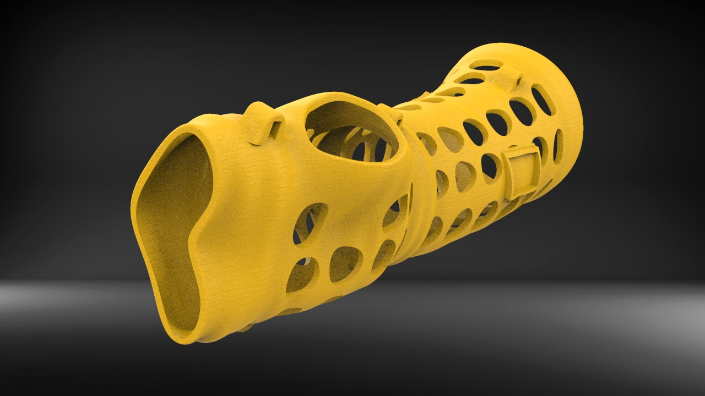

3D-printed ABS Casts
Overview
As a mechanical Design & Analysis intern at Santobono Innovation, an Italian non-profit startup, I worked on optimizing the efficiency of 3D-printed casts for children. I was able to achieve a >30% reduction of the stress experienced by the cast under normal use, while increasing the weight by only 5%. My work focused on optimizing the mounting points, the location and size of the hole pattern, as well as testing the design via FEA and impact simulations.
Design Goals
The design of the cast was optimized using the following design goals:
- Reduce the weight of the cast without any considerable loss in stiffness
- Improve the mechanical efficiency of the mounting points
- Figure out an appropriate hole pattern using impact simulations and FEA
- Optimize the design for specified 3D printing configurations
Design Optimization
Mounting points
The mounting points were optimized by rounding and merging the mounts with the cast. The new design could be 3d-printed with a 0.8mm nozzle with great precision. A side by side FEA comparison of the old and new design is shown below. The loads applied were provided experimentally and simulate normal use.
The improved design decreased the stress experienced during normal use by 30.4%, while adding only 2g to the weight of the entire cast.
Hole Pattern
Extensive testing was carried out by varyng hole size and hole spacing. Different patterns (e.g. Vonoroi patterns) were also tested. Testing was done both with printed prototypes and computer simulations. Examples of the 3D-printed experimental prototypes, as well as impact simulations, can be found below:

The test results converged towards a specific hole pattern, which showed a 13% decrease in stress concentration (under normal use) compared to previous designs. Part of the hole pattern is shown below:
Testing
The mechanical testing on the cast (both experimental and simulated) gave precious insight into design decisions. For example, testing showed that decreasing the thickness from 4mm to 3mm did not compromise the integrity of the cast under normal use.